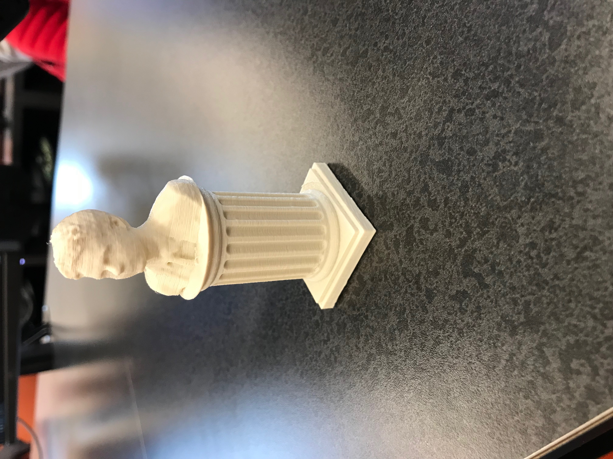

The projects for this rotation were centered around 3D Printing and using the Makerbot Replicator 5th Gen printer. The MakerBot Replicator
5th Gen is a 3D Printer capable of producing small to medium sized objects. The printer prints with material that is available in variety
of different colors. The maximum build size (in inches) is 9.9 L x 7.8 W x 5.9 H.
Our first task was to our face and attach it to a pedastal base. We then used MeshMixer to combine the digital 3D model of our head with
a pedestal.
